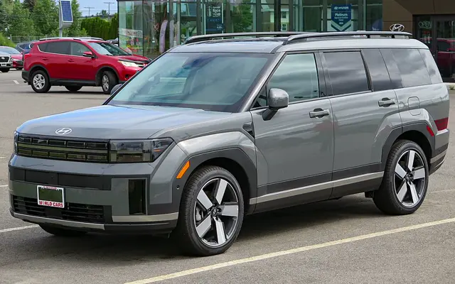

Par Motor › Precios por modelo › Hyundai Santa Fe
Precio de segunda mano · noviembre de 2026¿Cuánto vale un Hyundai Santa Fe de segunda mano?

Precio justo estimado de un Hyundai Santa Fe usado en España, año por año, con los kilómetros normales para su edad y en buen estado: de 12.200 € a 54.000 €. Para tasar el tuyo con sus kilómetros reales y su estado, usa el tasador gratis.
Precios del Hyundai Santa Fe por año
Santa Fe III (2012–2018)
Precio de nuevo: 2.2 CRDi 197 CV, 36.000 € · 2.4 192 CV, 33.000 € · 2.0 CRDi 150 CV, 33.000 €
| Año | Km normales | 2.2 CRDi 197 CV · Diésel | 2.4 192 CV · Gasolina | 2.0 CRDi 150 CV · Diésel |
|---|---|---|---|---|
| 2018 | 100.000 km | 19.600 € | 16.300 € | 17.900 € |
| 2017 | 100.000 km | 19.200 € | 15.900 € | 17.600 € |
| 2016 | 100.000 km | 17.900 € | 15.400 € | 16.400 € |
| 2015 | 100.000 km | 16.600 € | 14.900 € | 15.200 € |
| 2014 | 100.000 km | 15.400 € | 14.400 € | 14.100 € |
| 2013 | 100.000 km | 14.300 € | 13.500 € | 13.100 € |
| 2012 | 100.000 km | 13.300 € | 12.600 € | 12.200 € |
Santa Fe IV (2018–2024)
Precio de nuevo: 2.2 CRDi 200 CV, 42.000 € · HEV 230 CV, 46.000 € · PHEV (enchufable) 265 CV, 50.000 €
| Año | Km normales | 2.2 CRDi 200 CV · Diésel | HEV 230 CV · Híbrido | PHEV (enchufable) 265 CV · Híbrido enchufable |
|---|---|---|---|---|
| 2024 | 50.000 km | 32.700 € | 39.100 € | 36.400 € |
| 2023 | 70.000 km | 30.300 € | 36.300 € | 33.800 € |
| 2022 | 90.000 km | 25.900 € | 33.700 € | 31.400 € |
| 2021 | 100.000 km | 23.800 € | 30.000 € | 28.000 € |
| 2020 | 100.000 km | 23.500 € | 26.100 € | 24.400 € |
| 2019 | 100.000 km | 23.200 € | 24.500 € | 22.900 € |
| 2018 | 100.000 km | 22.800 € | 23.900 € | 22.300 € |
Santa Fe V (2024–hoy)
Precio de nuevo: HEV 215 CV, 50.000 € · PHEV (enchufable) 253 CV, 56.000 €
| Año | Km normales | HEV 215 CV · Híbrido | PHEV (enchufable) 253 CV · Híbrido enchufable |
|---|---|---|---|
| 2026 | 5.000 km | 54.000 € | 51.800 € |
| 2025 | 20.000 km | 45.800 € | 43.900 € |
| 2024 | 35.000 km | 42.500 € | 40.800 € |
Kilómetros normales: 15.000 al año en gasolina, híbridos y eléctricos, y 20.000 en diésel, con un máximo de 100.000 km (por encima no tasamos: el precio depende demasiado del historial de cada coche). Cifras redondeadas a 100 €.
Preguntas frecuentes
¿Cuánto vale un Hyundai Santa Fe de segunda mano?
Según el año, la versión y los kilómetros, un Hyundai Santa Fe usado vale hoy de 12.200 € a 54.000 € en España. El más barato de nuestra tabla es un 2.0 CRDi de 2012 (12.200 €) y el más caro un HEV de 2026 (54.000 €). Son precios justos estimados entre particulares y profesionales, con los kilómetros normales para su edad y en buen estado.
¿Qué motorizaciones tiene el Hyundai Santa Fe?
En nuestra base de datos hay versiones diésel, gasolina, híbrido y híbrido enchufable, en 3 generaciones: Santa Fe III, Santa Fe IV y Santa Fe V.
¿Cómo sé si me piden demasiado por un Hyundai Santa Fe?
Abre el tasador de Par Motor, elige el Hyundai Santa Fe, el año y los kilómetros reales, y escribe lo que te piden. Te diremos si está por debajo del precio justo (chollo) o por encima (caro). Es gratis y no pide registro ni matrícula.
Otros Hyundai
Compara su coste real
El precio de compra es solo una parte. Mira cuánto te costaría al mes con combustible, seguro, neumáticos, mantenimiento y lo que pierde de valor.
Abrir el comparador →